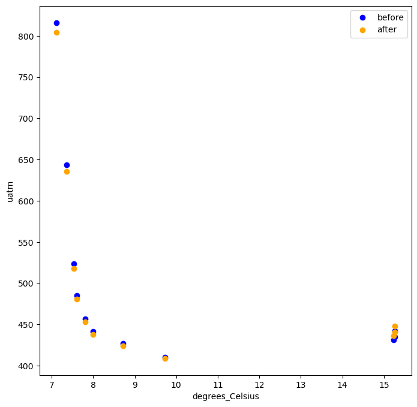
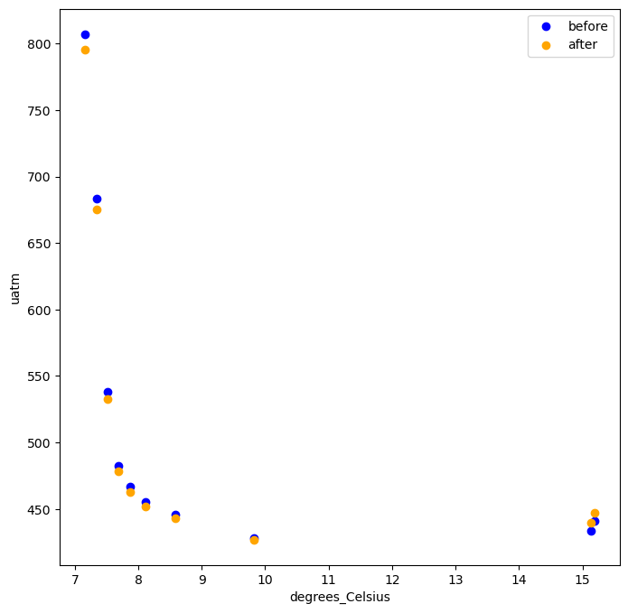
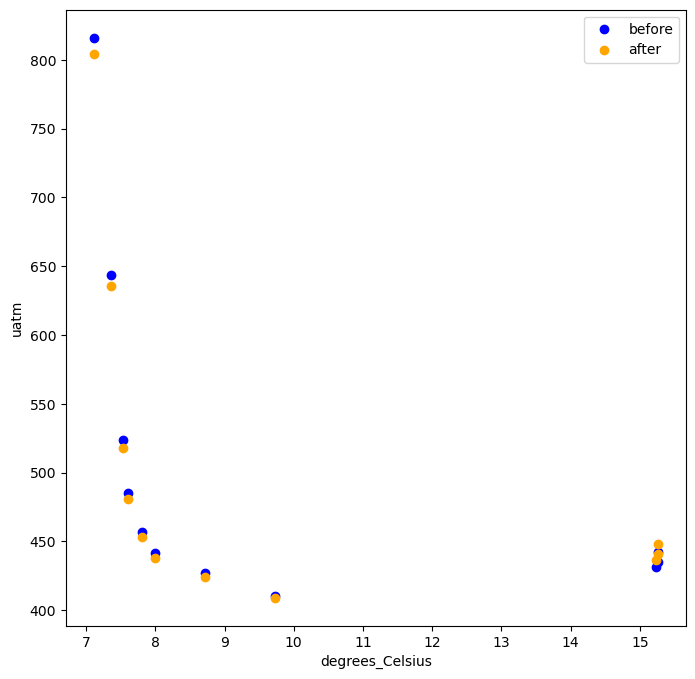
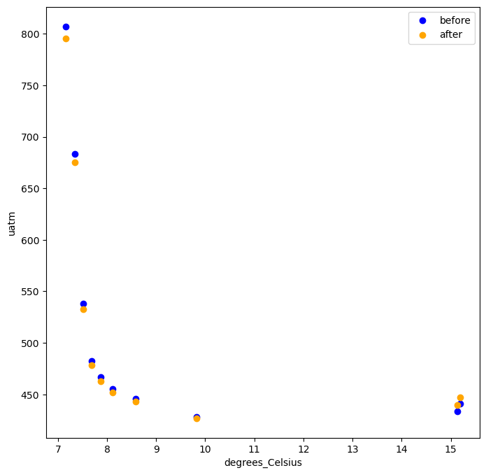

2025 PCO2 calibration correction analysis#
Sunburst Sensors recently informed OOI that they have corrected an error in their processing code that produces temperature-dependent data errors when deployment and calibration temperatures are significantly different. This notebook analyses the relative impact of this calibration change so that end-users can gauge impact on research products.
import xarray as xr
import pandas as pd
import numpy as np
import s3fs
import matplotlib.pyplot as plt
from matplotlib.colors import Normalize
import matplotlib.dates as mdates
from datetime import datetime, timezone
from loguru import logger
after_bucket = "ooi-data/"
before_bucket = "ooi-data-vault/"
fs = s3fs.S3FileSystem(anon=True)
def load_data(stream_name, bucket):
zarr_dir = bucket + stream_name
zarr_store = fs.get_mapper(zarr_dir)
ds = xr.open_zarr(zarr_store, consolidated=True)
return ds[["pco2_seawater", "pco2w_thermistor_temperature"]]
stream_list = [
"CE02SHBP-LJ01D-09-PCO2WB103-streamed-pco2w_b_sami_data_record",
"CE04OSBP-LJ01C-09-PCO2WB104-streamed-pco2w_b_sami_data_record",
"CE04OSPS-PC01B-4D-PCO2WA105-streamed-pco2w_a_sami_data_record",
"CE04OSPS-SF01B-4F-PCO2WA102-streamed-pco2w_a_sami_data_record",
"RS01SBPS-SF01A-4F-PCO2WA101-streamed-pco2w_a_sami_data_record",
"RS03AXPS-SF03A-4F-PCO2WA301-streamed-pco2w_a_sami_data_record",
]
def ticks(plt):
ax = plt.gca()
ax.xaxis.set_major_locator(mdates.MonthLocator()) # tick every month
ax.xaxis.set_major_formatter(mdates.DateFormatter('%b %Y')) # e.g., "Jan 2024"
plt.xticks(rotation=45) # rotate for readability
plt.tight_layout()
# --- Add faint vertical lines at each month ---
plt.grid(axis='x', linestyle='--', color='gray', alpha=0.5, linewidth=0.8)
def stream_summary(stream_name):
print(f"loading {stream_name}")
before = load_data(stream_name, before_bucket)
after = load_data(stream_name, after_bucket)
plt.figure(figsize=(40, 8))
plt.ylim(0, 4000)
plt.title("before and after correction")
plt.scatter(before['pco2_seawater']['time'], before['pco2_seawater'], s=0.1, color='blue', label='before correction')
plt.scatter(after['pco2_seawater']['time'], after['pco2_seawater'], s=0.1, color='orange', label='after correction')
plt.legend(markerscale=50)
ticks(plt)
plt.show()
temperature = before['pco2w_thermistor_temperature']
vmin, vmax = np.nanpercentile(temperature, [5, 95])
plt.figure(figsize=(40, 8))
plt.title("temperature reading")
plt.ylim(0, 4000)
plt.scatter(before['pco2_seawater']['time'], before['pco2_seawater'], s=0.1, c=temperature, cmap='coolwarm', norm=Normalize(vmin=vmin, vmax=vmax))
ticks(plt)
plt.show()
common_times = np.intersect1d(before.time.values, after.time.values)
before_sub = before.sel(time=common_times)
after_sub = after.sel(time=common_times)
years = before_sub['time.year']
plt.ylim(0, 5000)
plt.xlim(0, 5000)
sc = plt.scatter(before_sub['pco2_seawater'], after_sub['pco2_seawater'], s=0.1, c=years, cmap='rainbow')
plt.xlabel(f"{before_sub['pco2_seawater'].units} before correction")
plt.ylabel(f"{after_sub['pco2_seawater'].units}after correction")
cb = plt.colorbar(sc)
cb.set_label('time')
plt.show()
temperature = before_sub['pco2w_thermistor_temperature']
# compute 5th and 95th percentiles (ignoring nans)
vmin, vmax = np.nanpercentile(temperature, [5, 95])
plt.figure(figsize=(6, 6))
sc = plt.scatter(
before_sub['pco2_seawater'],
after_sub['pco2_seawater'],
s=0.1,
c=temperature,
cmap='coolwarm',
norm=Normalize(vmin=vmin, vmax=vmax),
)
plt.xlim(0, 5000)
plt.ylim(0, 5000)
plt.xlabel(f"{before_sub['pco2_seawater'].units} before correction")
plt.ylabel(f"{after_sub['pco2_seawater'].units} after correction")
cb = plt.colorbar(sc)
cb.set_label('Temperature (°C)')
plt.show()
return before_sub, after_sub
res_dict = {}
for stream in stream_list:
before, after = stream_summary(stream)
res_dict[stream] = (before, after)
loading CE02SHBP-LJ01D-09-PCO2WB103-streamed-pco2w_b_sami_data_record
loading CE04OSBP-LJ01C-09-PCO2WB104-streamed-pco2w_b_sami_data_record
loading CE04OSPS-PC01B-4D-PCO2WA105-streamed-pco2w_a_sami_data_record
loading CE04OSPS-SF01B-4F-PCO2WA102-streamed-pco2w_a_sami_data_record
loading RS01SBPS-SF01A-4F-PCO2WA101-streamed-pco2w_a_sami_data_record
loading RS03AXPS-SF03A-4F-PCO2WA301-streamed-pco2w_a_sami_data_record

Calibration difference in representative science pod profiles#
def load_regridding_inputs(refdes, append=True):
now = datetime.now(timezone.utc)
current_year = now.year
if append:
years = current_year
else:
years = list(range(START_YEAR, current_year + 1))
site = refdes[:8]
stream_name = SITES_DICT[refdes]['zarrFile']
logger.info("loading profile indices")
profile_indices_list = []
for year in years:
profile_indices = pd.read_csv(
f"https://raw.githubusercontent.com/OOI-CabledArray/profileIndices/refs/heads/main/{site}_profiles_{year}.csv"
)
profile_indices_list.append(profile_indices)
all_indices = pd.concat(profile_indices_list, axis=0, ignore_index=True)
return all_indices
START_YEAR = 2023
SITES_DICT = (
pd.read_csv("https://raw.githubusercontent.com/OOI-CabledArray/rca-data-tools/refs/heads/main/rca_data_tools/qaqc/params/sitesDictionary.csv")
.set_index('refDes')
.T.to_dict('series')
)
VARIABLE_MAP = (
pd.read_csv("https://raw.githubusercontent.com/OOI-CabledArray/rca-data-tools/refs/heads/main/rca_data_tools/qaqc/params/variableMap.csv")
.set_index('parameter')
.T.to_dict('series')
)
indices_301 = load_regridding_inputs('RS03AXPS-SF03A-4F-PCO2WA301', append=False)
indices_101 = load_regridding_inputs('RS01SBPS-SF01A-4F-PCO2WA101', append=False)
indices_102 = load_regridding_inputs('CE04OSPS-SF01B-4F-PCO2WA102', append=False)
2025-10-23 13:12:22.059 | INFO | __main__:load_regridding_inputs:13 - loading profile indices
2025-10-23 13:12:22.694 | INFO | __main__:load_regridding_inputs:13 - loading profile indices
2025-10-23 13:12:23.392 | INFO | __main__:load_regridding_inputs:13 - loading profile indices
indices_301.head()
| profile | start | peak | end | |
|---|---|---|---|---|
| 0 | 16493 | 2023-08-28 17:44:00 | 2023-08-28 18:51:00 | 2023-08-28 19:28:00 |
| 1 | 16494 | 2023-08-29 01:25:00 | 2023-08-29 03:41:00 | 2023-08-29 04:04:00 |
| 2 | 16495 | 2023-08-29 05:10:00 | 2023-08-29 06:19:00 | 2023-08-29 06:54:00 |
| 3 | 16496 | 2023-08-29 07:41:00 | 2023-08-29 08:49:00 | 2023-08-29 10:24:00 |
| 4 | 16497 | 2023-08-29 11:31:00 | 2023-08-29 12:37:00 | 2023-08-29 13:11:00 |
res_dict["RS01SBPS-SF01A-4F-PCO2WA101-streamed-pco2w_a_sami_data_record"] # before is 0, after is 1 index
(<xarray.Dataset> Size: 2MB
Dimensions: (time: 65665)
Coordinates:
* time (time) datetime64[ns] 525kB 2014-10-07T01:0...
Data variables:
pco2_seawater (time) float64 525kB 2.043e+04 ... 1.607e+03
pco2w_thermistor_temperature (time) float64 525kB 8.046 7.935 ... 7.537
Attributes: (12/62)
AssetManagementRecordLastModified: 2025-09-03T15:19:25.444000
AssetUniqueID: ATAPL-58336-00003
Conventions: CF-1.6
Description: pCO2 Water: PCO2W Series A
FirmwareVersion: Not specified.
Manufacturer: Sunburst Sensors
... ...
stream: pco2w_a_sami_data_record
subsite: RS01SBPS
summary: Dataset Generated by Stream Engine fr...
time_coverage_end: 2025-09-08T15:18:12.036230144
time_coverage_start: 2014-10-07T01:05:10.333669376
title: Data produced by Stream Engine versio...,
<xarray.Dataset> Size: 2MB
Dimensions: (time: 65665)
Coordinates:
* time (time) datetime64[ns] 525kB 2014-10-07T01:0...
Data variables:
pco2_seawater (time) float64 525kB 1.883e+04 ... 1.513e+03
pco2w_thermistor_temperature (time) float64 525kB ...
Attributes: (12/62)
AssetManagementRecordLastModified: 2025-10-21T14:59:51.689000
AssetUniqueID: ATAPL-58336-00003
Conventions: CF-1.6
Description: pCO2 Water: PCO2W Series A
FirmwareVersion: Not specified.
Manufacturer: Sunburst Sensors
... ...
stream: pco2w_a_sami_data_record
subsite: RS01SBPS
summary: Dataset Generated by Stream Engine fr...
time_coverage_end: 2025-10-23T09:58:30.203421696
time_coverage_start: 2014-10-07T01:05:10.333669376
title: Data produced by Stream Engine versio...)
def plot_profiles(indices, ds_tuple, tp=1000):
diff_list = []
j = 0
for idx, row in indices.head(tp).iterrows():
before_downcast = ds_tuple[0].sel(time=slice(row['peak'], row['end']))
after_downcast = ds_tuple[1].sel(time=slice(row['peak'], row['end']))
if len(before_downcast.time) > 0:
j+=1
diff = before_downcast / after_downcast
diff_values = ((1 - diff['pco2_seawater'].values) * 100)
diff_list.append(diff_values)
plt.figure(figsize=(8, 8))
plt.scatter(
before_downcast['pco2w_thermistor_temperature'],
before_downcast['pco2_seawater'],
label='before',
color='blue',
)
plt.scatter(
after_downcast['pco2w_thermistor_temperature'],
after_downcast['pco2_seawater'],
label='after',
color='orange',
)
plt.legend()
plt.ylabel(f"{before_downcast['pco2_seawater'].units}")
plt.xlabel(f"{before_downcast['pco2w_thermistor_temperature'].units}")
if j<=20:
plt.show()
else:
plt.close()
return diff_list
diff_101 = plot_profiles(indices_101, res_dict["RS01SBPS-SF01A-4F-PCO2WA101-streamed-pco2w_a_sami_data_record"])
diff_301 = plot_profiles(indices_301, res_dict["RS03AXPS-SF03A-4F-PCO2WA301-streamed-pco2w_a_sami_data_record"])
 



diff_102 = plot_profiles(indices_102, res_dict["CE04OSPS-SF01B-4F-PCO2WA102-streamed-pco2w_a_sami_data_record"])

def summarize_cal_changes(diff, title):
mean_list = []
max_list = []
for array in diff:
mean = np.mean(np.abs(array))
max_diff = np.max(np.abs(array))
mean_list.append(mean)
max_list.append(max_diff)
mean_diff = np.mean(mean_list)
greatest_diff_est = np.mean(max_list)
print(f"mean abs diff {mean_diff:.2f}")
print(f"mean of greatest abs diff per profile {greatest_diff_est:.2f}")
combined = np.concatenate(diff)
print(f"data points {len(combined)}")
# Make a histogram
plt.hist(combined, bins=50)
plt.title(title)
plt.xlabel('percent change')
plt.ylabel('count')
plt.show()
summarize_cal_changes(diff_101, "Percent change in RS01SBPS-SF01A-4F-PCO2WA101 values before/after cal correction")
mean abs diff 0.93
mean of greatest abs diff per profile 1.66
data points 1514
summarize_cal_changes(diff_301, "Percent change in RS03AXPS-SF03A-4F-PCO2WA301 values before/after cal correction")
mean abs diff 0.79
mean of greatest abs diff per profile 1.42
data points 1303
summarize_cal_changes(diff_102, "Percent change in CE04OSPS-SF01B-4F-PCO2WA102 values before/after cal correction")
mean abs diff 1.56
mean of greatest abs diff per profile 2.49
data points 2593
Summary#
The largest impact is seen at the Oregon offshore site CE04OSPS and at relatively lower temperatures.
Reference Designator |
Mean Abs Diff (%) |
Mean of Greatest Abs Diff per Profile (%) |
Data Points Sampled |
|---|---|---|---|
CE04OSPS-SF01B-4F-PCO2WA102 |
1.56 |
2.49 |
2593 |
RS03AXPS-SF03A-4F-PCO2WA301 |
0.79 |
1.42 |
1303 |
RS01SBPS-SF01A-4F-PCO2WA101 |
0.93 |
1.66 |
1514 |